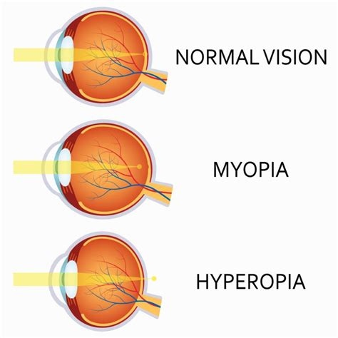

Obiettivi
- Definire lo stato refrattivo con accomodazione rilassata.
- Collegare potere e lunghezza assiale alla posizione del fuoco.
- Descrivere il punto remoto e interpretarne la vergenza.
- Distinguere astigmatismo regolare, focaline e cerchio di minima confusione.
- Separare classificazione delle focaline e orientamento dei meridiani.
Quando un occhio è emmetrope?
Livello intuitivo: Un occhio emmetrope mette a fuoco sulla retina la luce di un oggetto molto lontano senza dover accomodare. Il suo potere e la posizione della retina sono ben accordati.
Per essere maggiormente rigorosi: L’emmetropia riguarda la relazione tra potere equivalente e lunghezza assiale. Non richiede dimensioni anatomiche identiche in tutti gli occhi. La definizione si riferisce al fuoco parassiale e all’accomodazione rilassata.
Miopia e ipermetropia
Miopia
Livello intuitivo: Senza accomodare, la luce degli oggetti lontani si concentra prima della retina. Può accadere perché l’occhio è troppo lungo rispetto al suo potere, perché converge troppo, o per entrambe le ragioni.
Per essere maggiormente rigorosi: La miopia può avere contributi assiali e refrattivi. Il punto remoto è reale e a distanza finita davanti all’occhio. Accomodare aumenta il potere e non corregge la sfocatura da lontano del miope.
Ipermetropia
Livello intuitivo: Senza accomodare, la luce degli oggetti lontani convergerebbe dopo la retina. L’occhio può essere corto rispetto al suo potere oppure convergere troppo poco. Un giovane può compensare parte della sfocatura aumentando il potere del cristallino.
Per essere maggiormente rigorosi: Il punto remoto dell’occhio ipermetrope non accomodato è virtuale e dietro l’occhio. La capacità di compensazione dipende dall’accomodazione disponibile. Ipermetropia e presbiopia descrivono condizioni differenti.

Punto remoto e vergenza
Che cosa rappresenta il punto remoto?
Livello intuitivo: È il punto che l’occhio vede nitido senza accomodare. Per un emmetrope è all’infinito. Per un miope può essere, per esempio, mezzo metro davanti all’occhio.
Per essere maggiormente rigorosi: È il punto coniugato alla retina nell’occhio non accomodato. In aria, al piano di riferimento scelto, la vergenza del fascio associato è:
Cosa Vuol dire?
Livello intuitivo: Un punto remoto più vicino davanti all’occhio corrisponde a una maggiore miopia nel modello. A mezzo metro il valore è circa .
Per essere maggiormente rigorosi: è la posizione orientata del punto remoto in metri, rispetto al piano scelto. Un punto reale davanti all’occhio ha e produce vergenza negativa. Con , . Una distanza fisica è , non un numero negativo. Questo valore non identifica da solo il potere di un occhiale posto in un altro piano.
Astigmatismo
Perché un punto può dare due focaline?
Livello intuitivo: Se l’occhio converge diversamente in due direzioni, una parte del fascio arriva a fuoco prima dell’altra. Invece di un unico punto troviamo due brevi linee, poste a distanze diverse e orientate perpendicolarmente.
Per essere maggiormente rigorosi: Nell’astigmatismo regolare esistono due meridiani principali ortogonali, con poteri massimo e minimo. Il fascio forma la conoide di Sturm. Fra le focaline si trova il cerchio di minima confusione, dove la macchia è circolare, ma non puntiforme. Una lente sferica sposta entrambe le focaline senza annullare la loro separazione. Una componente cilindrica permette di modificarne la differenza.

Regolare e irregolare
Livello intuitivo: Nel caso regolare possiamo descrivere gran parte della differenza con due direzioni e due poteri. Nel caso irregolare la deviazione cambia in modo più complesso nelle diverse zone.
Per essere maggiormente rigorosi: L’astigmatismo regolare è rappresentabile, in prima approssimazione, da una correzione sferocilindrica. Quello irregolare comprende variazioni che due soli poteri principali non descrivono adeguatamente. Può richiedere topografia, tomografia e valutazione professionale; non si identifica con la semplice presenza di un cilindro elevato.
Classificazione rispetto alla retina
Tutti i casi seguenti si riferiscono all’accomodazione rilassata.
| Tipo | Prima focalina e seconda focalina |
|---|---|
| Miopico semplice | Una sulla retina, l’altra davanti |
| Miopico composto | Entrambe davanti alla retina |
| Ipermetropico semplice | Una sulla retina, l’altra dietro |
| Ipermetropico composto | Entrambe dietro la retina |
| Misto | Una davanti e l’altra dietro |
Livello intuitivo: Il tipo dipende da dove si trovano le due focaline, non da come è orientato l’asse scritto nella prescrizione.
Per essere maggiormente rigorosi: Nella classificazione si considerano i coniugati dei due meridiani principali. Il cerchio di minima confusione può cadere sulla retina anche con focaline ai suoi lati: ciò non rende l’occhio privo di astigmatismo.
Classificazione per orientamento
| Orientamento | Meridiano di maggiore potere positivo nell’occhio | Asse tipico di una correzione in cilindro negativo |
|---|---|---|
| Secondo regola | Circa verticale | Circa 180° |
| Contro regola | Circa orizzontale | Circa 90° |
| Obliquo | Lontano dalle direzioni verticale e orizzontale | Obliquo |
Per essere maggiormente rigorosi: Il meridiano più potente e l’asse del cilindro correttivo sono concetti diversi. Cambiare la prescrizione da cilindro negativo a positivo ruota l’asse di 90° senza cambiare l’occhio. I limiti angolari usati per classificare i casi possono variare fra convenzioni, quindi qui indichiamo gli orientamenti qualitativi.
Corneale, interno e totale
Livello intuitivo: La cornea contribuisce all’astigmatismo, ma non è l’unico elemento. Il cristallino e le altre strutture possono aumentarlo o compensarlo parzialmente.
Per essere maggiormente rigorosi: L’astigmatismo totale deriva dalla combinazione orientata dei contributi corneali e interni. Se gli assi differiscono, non si sommano soltanto i valori assoluti dei cilindri. Una mappa della sola cornea non coincide necessariamente con la correzione refrattiva dell’intero occhio.